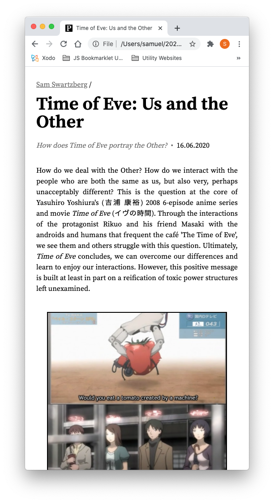

Paperify
Dieser Text ist auch auf <a href="2020-06-24-documentation-en">Englisch</a> verfügbar.
Konzept
Eine vanilla HTML/CSS/JS Website ohne Ansprüche ans Backend, die als Showcase für akademische oder ähnliche Werke des Autors fungiert - unabhängig davon, ob diese publiziert wurden. Wird aus Markdown-Dateien (.md) generiert. Kann auch dafür genutzt werden, Paper, Essays und ähnliches ohne Stylingschwierigkeiten und unnötiges Markup zu schreiben.
Zielgruppe
Student*innen und ehemalige Student*innen, Professor*innen und Lehrangestellte sowie andere, die Papers, Essays, Artikel oder Ähnliches teilen wollen. Kann auch als Blog o. Ä. fungieren.
Inhalte
Papers, Essays, Artikel.
Nutzung / Deployment
Da wir keinen Server haben, müssen wir vor Deployment das Markdown zu HTML umwandeln und einige andere kleine Tasks ausführen. Dafür muss das Script init.sh aus einer Shell (z. B. Terminal auf Mac OS) aufrufen: ./init.sh. Init.sh hat als Dependency markdown-to-html, was man so erhalten kann: npm install -g cwjohan/markdown-to-html. Ggf. ist es nötig, davor noch npm zu installieren. Nach jeder Änderung einer .md Datei muss das Script erneut laufen, um die HTML Dateien zu generieren. Änderungen an den HTML-Dateien selbst werden ohne Warnung überschrieben!
Die Variablen wie Name etc. sind in der Datei config.js zu finden. Die Metadaten für die Posts folgen dem Schema name|wert. Init.sh erwartet genau 6 Zeilen Metadaten, also darauf achten, dass alle 6 Header name date abstract arguments author lang spezifiziert sind. arguments akzeptiert als Werte noargs (keine Argumente; theoretisch nicht notwendig, nur zur Klarheit), nofootnotes (Keine Fußnoten generieren), nofigures (keine Bilder mit der Synax fig:{...}, s.u. generieren). author akzeptiert mehrere Autoren, solange verschiedene Namen mit Komma getrennt sind, und sortiert diese nach Nachnamen. lang akzeptiert Zwei-Zeichen-Ländercodes wie 'de' oder 'en'. Nach den 4 Zeilen keine Leerzeile lassen, markdown-to-html produziert sonst manchmal keinen oder falschen Output (außerhalb meiner Kontrolle).
Der Dateiname der Posts sollten mit dem Datum YYYY-MM-DD beginnen, um sicherzugehen, dass sie chronologisch sortiert werden.
Falls HTML-Tags im Markdown genutzt werden, sollten sie mit Leerzeichen umgeben sein, Block-Level Tags mit einer Leerzeile.
Use Case & Features
Einfacher Schreibprozess:
In Markdown zu schreiben erlaubt es einem, sich auf dem Inhalt zu konzentrieren, ohne sich um die Formatierung Gedanken zu machen. Markdown ist ein Klartext-Format, also eines, das mit jedem gängigen Text-Editor bearbeitet werden kann - allerdings ist ein Code-Editor wie Atom zu empfehlen. Dinge wie Überschriften, Links, Zitate werden mittels einer sehr einfachen Syntax markiert. Hier gibt es einen Guide.
Verglichen mit Word und Latex, erlaubt es schnelleres Schreiben als Word, weil man sich nicht sorgen machen muss, dass eine Handlung wie copy/paste Einfluss auf die Formatierung irgendwo anders hat, und weil man sich sicher sein kann, dass Dinge wie Zitate automatisch richtig formatiert werden. Selbst die Anführungszeichen werden automatisch eingefügt!
Es ist leichter zu lesen als Latex, weil die Datei nicht so aussieht:
\section{Section Name}
This is text in the section
\subsection{Sub Section Name}
The following is a list in this subsection
\begin{enumerate}
\item The first \textbf{bold} item
\begin{enumerate}
\item Nested item 1
\item Nested item 2
\end{enumerate}
\item The second \textit{italicized} item
\item The third etc \ldots
\end{enumerate}
Andere Features:
- Drucken: Via der Browser-Druckfunktion, dort ebenfalls Export zu .pdf.
- Archivieren: Da das Dateiformat ein Klartext-Format ist, gibt es keinen Grund, warum sie je nicht mehr funktionieren oder inkompatibel werden sollten. Kleine Fehler sind leicht zu entfernen.
- Einheitliche Formatierung: Da alle Dateien von einem Set CSS-Dateien formatiert werden, werden alle Paper automatisch dieselbe Formatierung haben. Jede Änderung am CSS wird sofort auf alle Paper angewandt!
- Self-Hosting: Man kann seine Paperify-Instanz modifizieren, wie man will, und dort hosten, wo man will.
Umsetzung der Ergebnisse der Web-Recherche
- Links: Der Besitzer der Paperify-Instanz kann selber Content verlinken. Den Content einzeln überprüfen.
- Impressum: Link im Footer.
- Datenschutzerklärung: Link im Footer.
- Frames / Hotlinking: Keine.
- Cookies: Von Haus aus keine - allerdings könnte je nach Webserver dieser welche setzen.
Urheberrecht:
- Texte: Angenommen wird, dass der Webseiten-Besitzer nur seine eigenen Texte hochlädt.
- Zitate: Generell sollten Zitate in einem wissenschaftlichen Werk den Standards des Rechts bezüglich Länge entsprechen.
- Bilder: Können ggf. in Papers vorkommen. Wenn, dann ist Urheberrecht individuell zu klären.
Barrierefreiheit:
- Nutzung von semantischen HTML-Elementen wie
<q>,<article>etc. - Responsive Design: Nutzbar auf allen Bildschirmen und bei jeder Zoomstufe.
- Alt-text für Bilder.
- Sprachliches Niveau der Texte nicht Barrierefrei! (inhärent in den Texten)
Mockups
Einfaches Header - Body - Footer Design:

Struktur
Eine index.html-Seite, die 0 - n Snippets enthält, die jeweils auf die Paper-Seiten verlinken.
Die Links und die Paper-Seiten werden automatisch aus den Markdown-Dateien generiert.
Unique Features
Fußnoten
Automatisch nummerierte und verlinkte Fußnoten. Diese sind nicht Teil der Markdown-Syntax, sondern sind in JS realisiert. Syntax: fn:{Inhalt der Fußnote}.
Abbildungen
Bilder mit Bildunterschrift, an denen der Text vorbeifließt. Diese sind nicht Teil der Markdown-Syntax, sondern sind in JS realisiert. Syntax: fig:Platzierung erlaubt als Werte left right center centerflex und Größe Werte von 0 - 100.
Auto-citation
Paperify unterstützt automatische Zitationen. So gehts: citationLibrary.js enthält ein Objekt citationMap. Diesem könnt ihr mittels der Methode citationMap.set(citationKey, citation) Einträge hinzufügen. Dabei ist der citationKey eine Kurzbezeichnung des Titels, die frei wählbar ist, die aber mit den ersten Buchstaben des Nachnamens des Autors beginnen sollte. citationKey muss ein String sein. citation ist ein CSL JSON Objekt, was bspw. Zotero (Ein Citation Manager) als Exportoption anbietet. Manchmal sind diese in einem Array [] gesammelt - dann müssen die Array-Klammern vorher entfernt werden. Nun ist es möglich, in jedem .md Post auf ein Werk mit c::citationKey;; Bezug zu nehmen, in Fußnoten wie außerhalb. Dies wird im Fließtext mit einer Citation ersetzt, zusätzlich wird aus den verwendeten Werken automatisch eine Bibliographie generiert. Falls in den Fußnoten ein Werk mehrmals hintereinander genannt wird, werden folgende Einträge automatisch mit 'ibid.'/'ebd.' ersetzt, je nach Sprache. Im Moment wird nach APA formatiert, möglicherweise kommen in der Zukunft mehr Optionen hinzu.
Style-Guide
Farben
- Text: Schwarz
- Links & schwächerer Text: rgba(0,0,0,0.6), also Schwarz mit 40% Transparenz -> Mittelgrau
- Code, Tabellen, Inhaltsverzeichnis: Verschiedene rgba(0,0,0,?) - Werte von 0.02 - 0.3 -> Hellgrau
Ziel der Farbgebung ist ein seriöses, akademisch-anmutendes, einfach zu lesendes Design.
Typographie
Schriftarten
Alle Schriftarten sind von Google Fonts, deren Fonts beliebig im Web nutzbar sind.
- Haupt-Schriftart: Source Serif Pro
- Header-Schriftart: Libre Baskerville
- Code-Schriftart: Inconsolata
Größe, Gewicht, Abstand
Die Idee hier war, die Schrift möglichst unauffällig zu gestalten, um nicht abzulenken, aber trotzdem den Überschriften etc. genug Fokus zu verleihen, um das Scannen des Texts zu ermöglichen. Daher haben die Überschriften, mit Ausnahme der Seitenüberschrift und den Top-Level Unterüberschriften dieselbe Schriftgröße wie der Text, und arbeiten mehr mit margin-top und margin-bottom.
Mittels der restlichen Merkmalen soll das Design sowohl elegant sein, aber sich auch nicht zu weit von den Konventionen des akademischen Designs zu entfernen.
Inspiration
Danksagung
Paperify nutzt tocbot, um das Inhaltsverzeichnis zu generieren.
Finale Worte
Diese Dokumentation wurde in Markdown geschrieben und mittels Paperify formatiert!